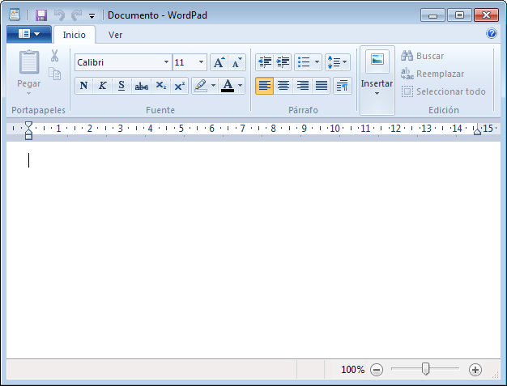
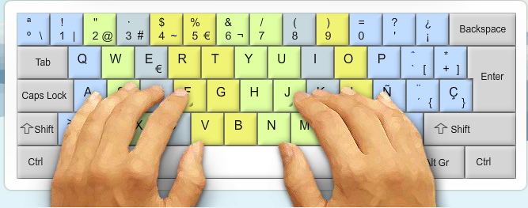

Sesión 7: Práctica.
1. Firmar la asistencia a la clase
Vamos a firmar la asistencia a clase. Sigue estos pasos:

- Abre un navegador web.
- Accede a la página http://mayores.uji.es.
- Ves a la sección "Docencia", y en esa página busca el enlace a "Gestión de firmas" que encontraras en la parte inferior de la columna lateral izquierda.
- Verás que te solicita tu usuario/contraseña de la UJI, ya que firmar la asistencia es una acción específica de cada uno de nosotros/as.
- Si finalmente has conseguido llegar hasta aquí, apreta el botón de "Firmar asistencia".
2. Abrir el Wordpad, maximinar, minimizar, redimensionar, cerrar.
Vamos a abrir la aplicación Wordpad, y me gustaría que intentarais realizar las acciones que hemos visto en la presentación, es decir:
- Abre Wordpad utilizando el Menú Inicio.
- Minimiza y vuelve a restaurar WordPad.
- Maximiza y restaura WordPad.
- Redimensiona y mueve la ventana de WordPad.
3. Repaso del teclado
Vamos a conectarnos a una web que nos va a permitir practicar nuestro dominio del teclado con unas lecciones de mecanografía que nos irán muy bien para coger soltura con la introducción de datos en el teclaso. La web es keybr.com, y puedes acceder a ella pinchando con el botón izquierdo del ratón en el enlace que verás debajo de este párrafo.
http://keybr.com